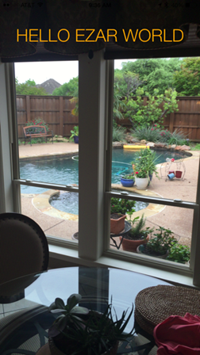

A simple ezAR™ hello world app based on the default Cordova project template.
See index.html for the small set of changes required to enable ezAR in your application.

While ezAR works with Cordova-based SDKs such as Ionic, only Cordova CLI examples are provided below. This example was built and tested with Cordova 6.0 and only uses the VideoOverlay plugin.
Step-1. Add your target platform(s) to the project
cordova platform add ios
or
cordova platform add android
Note: the project will automatically install the Cordova whitelist and ezAR VideoOverlay plugins. The VideoOverlay plugin is assumed to be at ../../plugins/ relative to this project. If your setup is different please modify the plugin element in the config.xml.
Step-2. Build and install on device Note: because of the ezAR camera requirement the app will only perform correctly when installed on a real mobile device.
The ezAR VideoOverlay plugin supports both standard and the alternative Crosswalk WebView for Android and WKWebView for iOS. To enable one of these alternative webviews comment the specific plugin entries in the config.xml file.
See ezartech.com for documentation and support.
Copyright (c) 2015-2016, ezAR Technologies